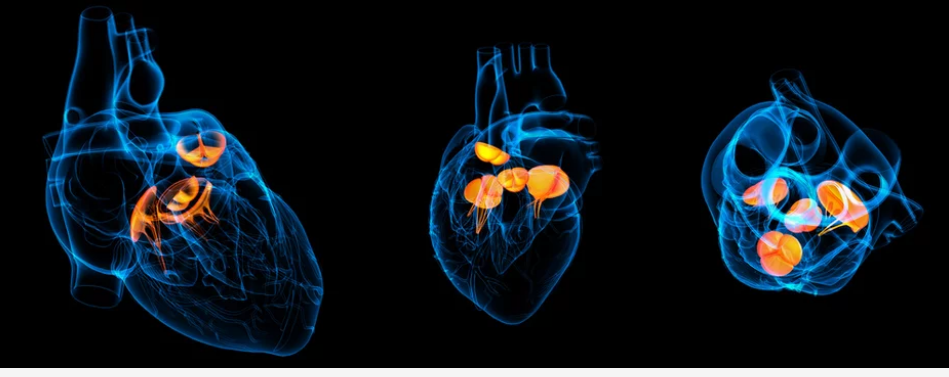

Congenital Heart Disease is a complex and diverse group of medical conditions characterized by abnormalities in the structure and function of the heart that are present at birth. These conditions arise during the early stages of fetal development, often before the mother is even aware of her pregnancy. CHD can encompass a wide range of cardiac anomalies, from relatively minor defects with little impact on overall health to more complex and severe conditions that require immediate medical attention. One of the fundamental aspects of CHD is that it affects the heart's structure and how it functions. The heart is a remarkable organ responsible for pumping oxygen-rich blood to various parts of the body, ensuring proper nourishment and oxygenation of tissues. In individuals with CHD, this intricate process can be disrupted, leading to a variety of potential complications. The specific nature of CHD can vary widely from one individual to another. Some cases may involve a small hole in the heart's walls or abnormal valve function, while others may entail more complex malformations such as misalignment of major blood vessels or underdeveloped chambers. Consequently, the severity of CHD can range from mild, where individuals may lead relatively normal lives with minimal intervention, to severe, requiring extensive medical treatment, surgeries, and ongoing care.
The impact of CHD on blood circulation is significant. Depending on the nature of the defect, it can disrupt the flow of blood through the heart chambers and out to the rest of the body. This can lead to symptoms such as fatigue, shortness of breath, poor growth, and in severe cases, life-threatening complications. Early detection and intervention are crucial for individuals with CHD. Advances in medical science and technology have allowed for the diagnosis of many CHDs during pregnancy or shortly after birth. This early identification enables healthcare providers to implement appropriate treatment plans, which may include medication, surgical procedures, or catheter-based interventions to correct or alleviate the heart abnormalities. Living with CHD often requires ongoing medical care and support. Regular check-ups with cardiologists, specialized cardiac care teams, and, in some cases, additional specialists, are essential to monitor the heart's function and address any emerging issues. Furthermore, individuals with CHD and their families may benefit from education and resources that empower them to understand and manage the condition effectively. In conclusion, Congenital Heart Disease is a diverse group of conditions affecting the heart's structure and function that are present at birth. While it can range from mild to severe, early detection and appropriate medical intervention play a critical role in managing CHD and enabling individuals to lead fulfilling lives despite this cardiac challenge. Ongoing research and medical advancements continue to improve the prognosis and quality of life for those living with CHD.
How is the Procedure Performed?
- The treatment of Congenital Heart Disease (CHD) is tailored to the specific type and severity of the defect. For some infants and children affected by CHD, surgical intervention may be necessary to repair abnormalities in the heart or blood vessels. In more complex cases, multiple surgeries might be required over time to address the intricacies of the condition.
- However, there are instances where CHD can be treated without resorting to open-heart surgery. This is accomplished through a specialized procedure known as cardiac catheterization. During this procedure, a thin, flexible tube called a catheter is inserted into a blood vessel, typically in the groin or arm, and threaded through to the heart. This catheterization allows for both diagnostic and interventional purposes.
- In cases where surgery is not immediately required, cardiac catheterization offers a minimally invasive approach to diagnose and address certain types of CHD. Through this method, healthcare providers can assess the heart's structure, function, and blood flow patterns. This invaluable information guides treatment decisions and helps determine the most appropriate course of action for each individual.
- Moreover, cardiac catheterization can also be used for interventional purposes. This means that, in some instances, it is possible to perform corrective procedures using specialized tools inserted through the catheter. These interventions might include opening narrowed or blocked blood vessels, closing abnormal connections, or placing devices like stents to support healthy blood flow.
- One of the significant advantages of cardiac catheterization is its reduced invasiveness compared to traditional open-heart surgery. It generally involves shorter hospital stays, quicker recovery times, and fewer associated risks. This makes it an attractive option for certain types of CHD, especially in cases where the defect can be effectively addressed through catheter-based techniques.
- Overall, the choice between surgical intervention and cardiac catheterization is carefully considered by a multidisciplinary team of healthcare professionals, including cardiologists, cardiac surgeons, and interventionalists. They collaborate to determine the most appropriate and effective treatment plan for each individual with CHD.
Who is the Right Doctor for Angiography?
The right doctor to consult for the treatment of Congenital Heart Disease (CHD) depends on various factors, including the age of the patient, the specific type and severity of the CHD, and the stage at which it is diagnosed.
- Pediatric Cardiologist: For infants and children diagnosed with CHD, a Pediatric Cardiologist is often the first point of contact. These specialized cardiologists are trained to diagnose and manage heart conditions in pediatric patients. They use various diagnostic tools, including fetal echocardiograms during pregnancy, to identify and monitor CHDs.
- Pediatric Cardiac Surgeon: In cases where surgical intervention is necessary, a Pediatric Cardiac Surgeon is the specialist responsible for performing heart surgeries on infants and children with CHD. They have extensive experience in repairing or correcting structural abnormalities of the heart and blood vessels in young patients.
- Adult Congenital Heart Disease Specialist: Some individuals with CHD continue to require medical care and monitoring into adulthood. In such cases, an Adult Congenital Heart Disease Specialist is essential. These experts are trained to address the unique needs of adults living with CHD.
- Cardiologist: General Cardiologists can also be involved in the care of patients with CHD, especially in cases where adults with CHD develop cardiac issues that require treatment or management.
- ardiovascular Surgeon: In complex cases of CHD that persist into adulthood or require specialized surgical interventions, Cardiovascular Surgeons may be consulted to perform surgeries.
- Multidisciplinary Team: Often, the best approach to CHD treatment involves a multidisciplinary team of healthcare professionals, including cardiologists, surgeons, radiologists, anesthesiologists, and specialized nurses. They collaborate to develop comprehensive treatment plans tailored to the specific needs of each patient.
What is included in the cost of Congenital Heart Disease Chd Treatment?
The cost of Congenital Heart Disease includes:
- Preoperative diagnostic tests cost [electrocardiogram (ECG), ultrasound, coronary angiogram, magnetic resonance imaging (MRI), etc.]
- Surgery cost
- Post-Operative cost (depends on the number of follow-up sessions)
- Medicine cost [blood pressure drugs, beta-blockers, water pills (diuretics), etc.]
- Patient's hospital stay
What are the factors affecting cost of Congenital Heart Disease Chd Treatment?
The overall cost of the procedure also varies based on the patient's condition and preferences. Some of these factors are:
- Type of hospital and room opted (General, Twin sharing, or single room)
- The severity of the disease
- Post-surgical complication, if it happens (such as bleeding, blood clot, infection, etc.)
- Cost of Blood products (if required)
- An extended stay at the Hospital
- Cost of Accommodation during follow-ups, in case the patient is not a local resident
Cost related to Angiography
| Treatment name | Cost range |
|---|---|
| Congenital Heart Disorder CHD | Rs.177600 to Rs.236800 |
| Thoracic Aortic Aneurysm Treatment | Rs.146520 to Rs.195360 |
| ASD (Atrial Septal Defect) Closure | Rs.217560 to Rs.290080 |